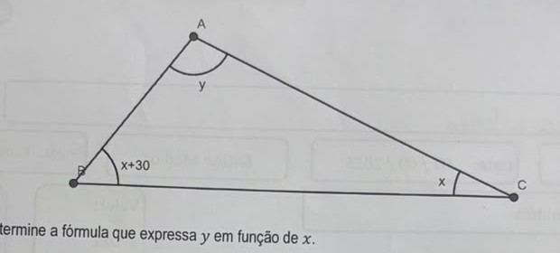
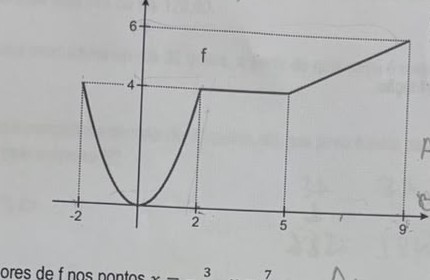
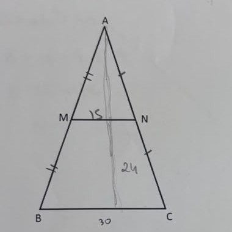
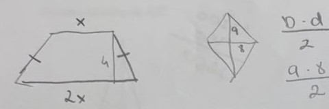

Professores: Ruben Carneiro e Juliana Jong · AC1 · Simulado Vital
Considere o triângulo representado abaixo, onde x, x + 30 e y são as medidas, em graus, de seus ângulos internos.

a) Determine a fórmula que expressa y em função de x.
b) Podemos dizer que a fórmula obtida no item anterior é uma função de R em R, sendo x e y ângulos de um triângulo medidos em graus? Justifique sua resposta.
a) A soma dos ângulos internos de um triângulo é 180°: y + x + (x+30) = 180 → y + 2x + 30 = 180 → y = -2x + 150 (ou f(x) = -2x + 150).
b) Como fórmula algébrica, sim, é uma função de R em R (pra todo x real existe um y real). Mas se x e y precisam representar ângulos de um triângulo de verdade, o domínio não pode ser todo o R: os três ângulos (x, x+30 e y) precisam ser todos positivos e menores que 180°, e isso só acontece pra um intervalo restrito de x (aproximadamente 0° < x < 75°). Ou seja, o problema não é o coeficiente "a" ser negativo (isso não tem relação com a validade dos ângulos) — o problema é que nem todo x real corresponde a um triângulo de verdade.
Uma função f está definida no intervalo [-2, 9] da seguinte forma: para x ∈ [-2, 2], f leva x em x², e, no restante do domínio, o seu gráfico é formado por dois segmentos de reta conforme mostra a figura.

a) Determine os valores de f nos pontos x = -3/2, x = 7/2.
b) Determine o valor de f no ponto x = 8.
Pelo gráfico: de x=2 a x=5, f é constante em 4; de x=5 a x=9, f é uma reta de (5,4) até (9,6), com coeficiente angular (6-4)/(9-5) = 1/2, ou seja f(x) = 0,5x + 1,5 nesse trecho.
a) x=-3/2 está em [-2,2], então usa f(x)=x²: f(-3/2) = (-3/2)² = 9/4. x=7/2=3,5 está em [2,5] (trecho constante): f(7/2) = 4.
b) x=8 está no trecho [5,9]: f(8) = 0,5×8 + 1,5 = 4 + 1,5 = 11/2 (5,5).
Considere a função em R dada pela lei
f(x) = √(-3 / (x + 5))
a) Determine f(-32)
b) Determine o domínio da função.
a) f(-32) = √(-3/(-32+5)) = √(-3/-27) = √(1/9) = 1/3.
b) Pra raiz quadrada existir, o que está dentro dela precisa ser ≥ 0: -3/(x+5) ≥ 0. Como o numerador (-3) é sempre negativo, a fração só é ≥ 0 se o denominador também for negativo (negativo ÷ negativo = positivo), ou seja x+5 < 0 → x < -5 (não pode ser igual a -5, porque aí o denominador zera e a divisão não existe). Domínio: D = {x ∈ R | x < -5}.
Duas empresas de entrega de mercadorias, A e B, são concorrentes. A empresa A cobra R$ 4,00 por quilo da encomenda e mais R$ 30,00 de taxa fixa. Já a tarifa da empresa B é de R$ 6,00 por quilo, sem taxa fixa, para encomendas de até 30 quilos; para encomendas de mais de 30 quilos, a empresa B cobra R$ 2,00 por quilo, mais uma taxa fixa de R$ 120,00.
a) Considerando uma mercadoria de até 30 quilos, a partir de qual peso é mais barato pedir uma entrega pela empresa A?
b) Considerando uma mercadoria de mais de 30 quilos, até que peso é mais barato pedir uma entrega pela empresa A do que pela empresa B?
Custo de A: A(x) = 4x + 30. Custo de B: B(x) = 6x (até 30kg) ou B(x) = 2x + 120 (acima de 30kg).
a) Queremos 4x + 30 < 6x → 30 < 2x → x > 15kg. A partir de 15kg, a empresa A fica mais barata.
b) Queremos 4x + 30 < 2x + 120 → 2x < 90 → x < 45kg. Ou seja, entre 30 e 45kg (sem incluir 45kg, onde os preços empatam em R$210), a empresa A ainda sai mais barata. Se estiver contando só quilos inteiros, o último peso em que A é estritamente mais barata é 44kg.
Determine a raiz quadrada da expressão
x² - 4x + 4
x² - 4x + 4 é um trinômio quadrado perfeito: x² - 4x + 4 = (x-2)². Então √(x² - 4x + 4) = √((x-2)²) = |x-2| (módulo, não só "x-2" — a raiz quadrada de um quadrado sempre devolve um valor não-negativo pra qualquer x real).
Atenção: o discriminante dessa expressão (tratada como equação x²-4x+4=0) é Δ=0, mas isso não significa que "não dá pra determinar a raiz" — Δ=0 só indica que é um quadrado perfeito (raiz dupla em x=2), o que é exatamente o que permite simplificar pra |x-2|.
Sabendo que no triângulo ABC da figura, AB = 20 e BP/PA = 2/3, calcule:
a) a medida de AP.
b) a medida de AC.
a) Como P está sobre AB, AP + BP = 20. Chamando AP de x, BP = 20-x. Da razão BP/PA = 2/3: (20-x)/x = 2/3 → 3(20-x) = 2x → 60-3x = 2x → 60 = 5x → x = AP = 12 (e BP = 8).
b) Pelos ângulos marcados iguais na figura (ângulo comum em A, e os dois ângulos x marcados iguais), os triângulos ABC e ACP são semelhantes (caso AA), o que gera a relação AC/AB = AP/AC, ou seja AC é a média geométrica entre AB e AP: AC² = AB × AP = 20 × 12 = 240 → AC = √240 = 4√15.
No triângulo isósceles ABC da figura, M é ponto médio de AB e N é ponto médio de AC. Se MN = 15 e a altura relativa à base BC do triângulo é 24, calcule:

a) a medida de BC.
b) a área do triângulo ABC.
a) MN é a base média do triângulo em relação a BC (M e N são pontos médios de dois lados). Pelo teorema da base média, MN = BC/2, logo BC = 2 × 15 = 30.
b) Área = (base × altura)/2 = (30 × 24)/2 = 720/2 = 360.
Um produto que custava R$ 1500,00 sofreu dois aumentos sucessivos de 20% e um desconto de 40%. Qual é o preço final desse produto?
O erro mais comum aqui é somar as porcentagens (20% + 20% = 40% de aumento) — mas aumentos sucessivos se multiplicam, não se somam. O jeito certo é aplicar cada variação em sequência:
1500 × 1,20 = 1800 (depois do 1º aumento)
1800 × 1,20 = 2160 (depois do 2º aumento)
2160 × 0,60 = 1296 (depois do desconto de 40%)
Preço final: R$ 1296,00. (Se você somar os dois aumentos de 20% como um único "aumento de 40%", chega em 1500×1,40×0,60 = R$1260 — um valor próximo, mas matematicamente incorreto, porque ignora que o segundo aumento de 20% incide sobre o valor já aumentado, não sobre o valor original.)
Um trapézio isósceles possui a base maior medindo o dobro da menor e altura de medida 4 cm. Esse trapézio possui área igual ao de um losango cuja diagonal maior mede 9 cm e diagonal menor mede 8 cm. Calcule o perímetro desse trapézio, em cm.

Área do losango = (D × d)/2 = (9 × 8)/2 = 36.
Área do trapézio (base maior 2x, base menor x, altura 4) = ((2x+x) × 4)/2 = 6x. Igualando às áreas: 6x = 36 → x = 6. Então base maior = 12, base menor = 6.
Falta o lado (perna) do trapézio: a diferença entre as bases dividida por 2 dá a "sobra" horizontal de cada lado: (12-6)/2 = 3. Com a altura 4, o lado é a hipotenusa de um triângulo retângulo de catetos 3 e 4: lado = √(3²+4²) = √25 = 5.
Perímetro = base maior + base menor + 2×lado = 12 + 6 + 2×5 = 28 cm.
Um polígono convexo possui 27 diagonais. Determine que polígono é esse e qual é a soma de seus ângulos internos.
Número de diagonais de um polígono de n lados: D = n(n-3)/2. Com D=27: 27 = n(n-3)/2 → 54 = n² - 3n → n² - 3n - 54 = 0.
Resolvendo (Δ = 9 + 216 = 225, √225 = 15): n = (3 ± 15)/2 → n=9 ou n=-6 (descartado, não existe polígono com lados negativos). Então n = 9 (um eneágono/nonágono).
Soma dos ângulos internos: Si = (n-2) × 180 = (9-2) × 180 = 7 × 180 = 1260°.